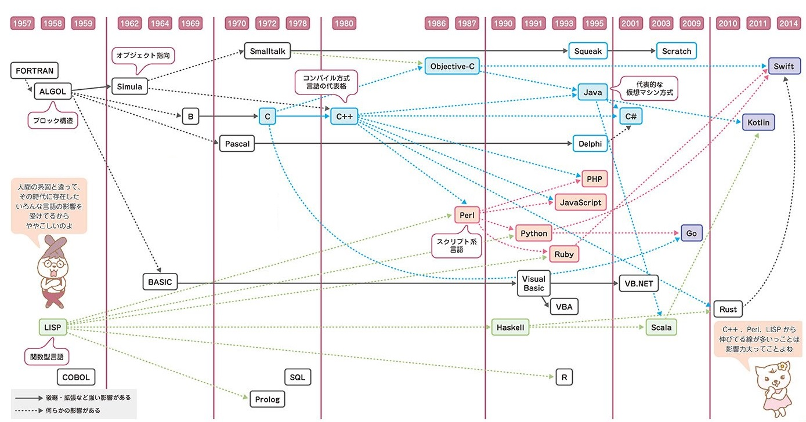

コンピュータはさまざまな情報を瞬時に判断、処理し、機器に仕事をさせる命令を出しますが、そのためにはコンピュータに、仕事の手順や方法をあらかじめ記憶させておく必要があります。その手順を記述したものを 「プログラム」といい、プログラムを作成・記述するための言葉を「プログラミング言語」といいます。
�@Python�i�p�C�\���j�����̂ЂƂŁA��r�I�ȒP�ŏ��S�҂ł��������₷���A�ǐ��ɗD��Ă���A�R���p�C����K�v�Ƃ��Ȃ��A�Θb�^�V�F���ɂē���m�F���\�A�@�B�w�K�֘A�̃��C�u�������L�x�ȂǑ����̓���������܂��B�l�C�̂��錾��̂ЂƂł��B
�@�m���ɁA�ŋ߂̃v���O���~���O����̎嗬��Java��C++�Ƃ������uC����Ƃ��̎q���v�����S�ɂȂ��Ă��܂��܂������AJava���͂��߂Ƃ���͂��̌���́A�Ƃɂ�����肽�����Ƃ��͂��߂�܂ł̏����������ł��B�P�ɕ�����\������ꍇ�ł��A�܂����C���N���X�������Ă����ŃE�C���h�E���쐬�A����ɃE�C���h�E�ɕ�����\������R���|�[�l���g��z�u���A�v���p�e�B�ɕ������ݒ�c�c�Ƃ����������ŁA������Ƃ��������������Ȃ��̂ɁA�v���O���������\�s�ɂȂ��Ă��܂��ꍇ������܂��B
�@���̓_�APython�Ȃ�print�i"test"�j�Ƃ��邾���ŁAtest�Ƃ���������\�����邱�Ƃ��ł��܂��B�E�C���h�E���ǂ��́A�R���|�[�l���g���ǂ��́Amain�����ǂ��́A�ȂǂƂ������Ƃ͋C�ɂ���K�v������܂���B�C�y�ɂ�肽�����Ƃ����������Ă����Ɏ��s�ł��܂��B�E�C���h�E���GUI���Ƃ����������ڂɊւ��邱�ƁA�\�w�I�ȕ����͂����Ƃ��āA�܂������ł��ݏグ�����������s����v���O���~���O���̂��̂��w�K���Ă����ɂ́A�œK�̊��Ƃ�����ł��傤�B
�@�����ڂ͒n����������Ȃ����ǁA�v���O�����̊�{���w�тA�v���O���~���O�̖ʔ����������ł������Ă��炦����Ǝv���܂��B
���v���O���~���O����̌n���}

{kind=link}